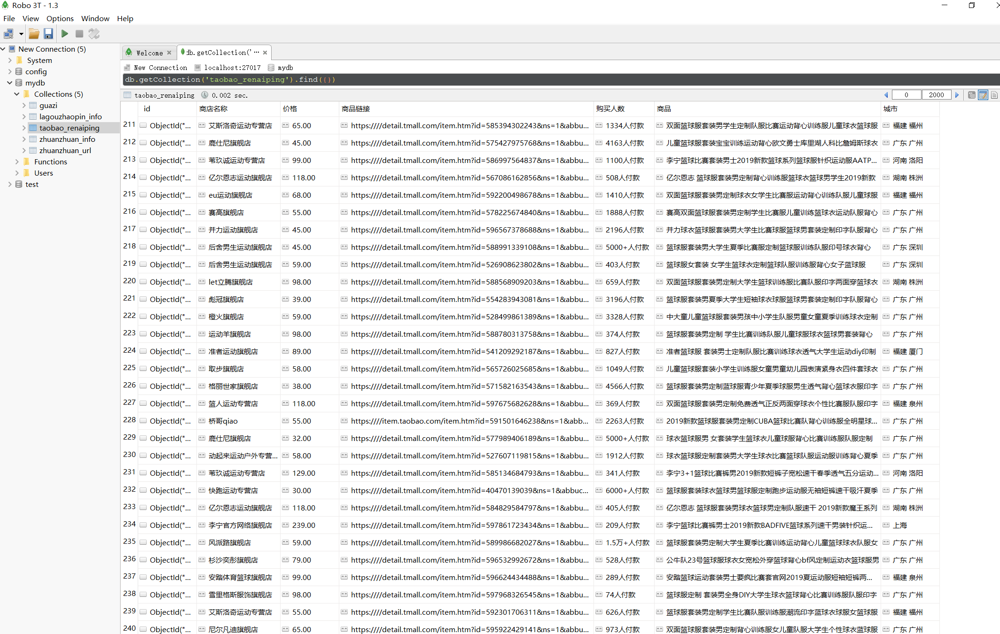

Contents
20.14. Selenium模拟浏览器¶
20.14.1. Selenium + PhantomJS的配合使用¶
Selenium：用于模拟真实用户在浏览器中操作。对于一些采用异步加载技术的网页，如果难以用抓包来构造爬虫，可以通过Selenium让浏览器自动加载页面，从而获取所需的数据。
PhantomJS：无界面浏览器，相比Chrome，Firefox等浏览器，意味着开销小，速度快。
可直接在官网上下载：http://phantomjs.org/
1. PhantomJS的安装¶
①下载PhantomJS文件后，解压并将phantomjs.exe复制到系统路径中，例如：C:\Python36。
②运行下述代码无误，说明PhantomJS环境已经配置好。
from selenium import webdriver
driver = webdriver.PhantomJS()
3.使用selenium操作元素的常用方法有：
elem.send_keys("输入内容")
elem.click() #鼠标单击元素
elem.clear() #清除元素内容
2. PhantomJS的使用¶
以豆瓣为例：
#!/usr/bin/env python
#-*- coding:utf8 -*-
# auther; 18793
# Date：2019/7/23 17:25
# filename: 模拟豆瓣测试.py
from selenium import webdriver
import time
from lxml import etree
# 动态页面获取之二
driver = webdriver.PhantomJS()
driver.get("https://www.douban.com/")
# 获取源码
html = driver.page_source
root = etree.HTML(html)
iframes = root.xpath('//div[contains(@class,"login")]/iframe/@src')[0]
# 因为登录是iframe引入的 所以重新再开一个
driver.get("https:" + iframes)
# 模拟点击 切换到密码登录
driver.find_element_by_class_name("account-tab-account").click()
time.sleep(1)
# 输入账号和密码
driver.find_element_by_id("username").send_keys("13262662216")
driver.find_element_by_id("password").send_keys("cu0gu0ai@94")
# 点击登录
driver.find_element_by_class_name("btn-account").click()
time.sleep(4)
#打印网页源码
# print(driver.page_source)
# 快照保存
driver.save_screenshot('douban_denglu.png')
# 退出
driver.quit()
对于不复杂的网页结构，可以使用class、name、id属性来定位元素。 对于复杂的网页结构来说，使用Xpath更加合适。
3.以简书网的某篇文章为例，进行信息的爬取。¶
爬取网址：https://www.jianshu.com/p/c80badcaa5bf
爬取方式：selenium + phantomJS
from selenium import webdriver
driver = webdriver.PhantomJS()
driver.get("https://www.jianshu.com/p/c80badcaa5bf")
driver.implicitly_wait(10) #隐式等待20秒
author = driver.find_element_by_css_selector("span.name").text ##使用CSS方式
author1 = driver.find_element_by_xpath('//span[@class="name"]').text ##使用xpath方式，与上一句等价
date = driver.find_element_by_css_selector("span.publish-time").text
word = driver.find_element_by_css_selector("span.wordage").text
view = driver.find_element_by_css_selector("span.views-count").text
comment = driver.find_element_by_css_selector("span.comments-count").text
like = driver.find_element_by_css_selector("span.likes-count").text
reward = driver.find_element_by_css_selector("span.rewards-count ").text #其中，reward的信息没办法获取。
print(author,date,word,view,comment,like,reward)
代码
author1 = driver.find_element_by_xpath('//span[@class="name"]').text
看出，要想取得文本信息，要在末尾加上.text，而Xpath的语法是路径后加上/text()，就这一点不同需要注意。
20.14.2. PhantomJS实例 - 淘宝商品搜索和翻页¶
爬取网址：https://www.taobao.com/
爬取信息：商品价格，付款人数，商品名称、商家名称和地址
存储方式：mongodb存储
淘宝的商品信息是采用Ajax动态加载的，所以使用PhantomJS能自动加载内容，省去了分析构造网页的步骤。
代码信息：
#!/usr/bin/env python
# -*- coding:utf8 -*-
# auther; 18793
# Date：2019/7/24 11:09
# filename: 02.爬取淘宝商品信息.py
from selenium import webdriver
from bs4 import BeautifulSoup
import pymongo
import time
# 连接mongodb
client = pymongo.MongoClient('localhost', 27017)
mydb = client['mydb']
taobao_rnp = mydb['taobao_renaiping'] # 连接数据库及创建数据库、数据集合
def search_good(word):
"""
模拟淘宝搜索框搜索
:param word:
:return:
"""
url = "https://www.taobao.com/"
driver.get(url)
driver.implicitly_wait(4)
driver.find_element_by_id("q").clear() # 清除搜索框内容
driver.find_element_by_id("q").send_keys(word) # 搜索框输入搜索内容
driver.find_element_by_class_name("btn-search").click() # 点击搜索按钮
return driver.current_url # Gets the URL of the current page.
def get_info(url):
"""
获取每一页的如下信息:
"商品": xx
"价格": xx
"购买人数":xx
"商店名称":xx
"城市": xx
:param url:
:return:
"""
driver.get(url) # 获取网页源码
driver.implicitly_wait(4)
soup = BeautifulSoup(driver.page_source, "lxml")
infos = soup.select("#mainsrp-itemlist > div > div")
for info in infos:
goodss = info.select("div.row > a")
prices = info.select("div.price.g_price.g_price-highlight > strong")
Play_Number_peoples = info.select("div.row.row-1.g-clearfix > div.deal-cnt")
Shop_names = info.select("div.shop > a > span:nth-of-type(2)")
Citys = info.select("div.row.row-3.g-clearfix > div.location")
Product_links = info.select(" div.row.row-2.title > a")
# print(Product_link)
# goods = info.select("div.row > a")[0].get_text().strip()
# price = info.select("div.price.g_price.g_price-highlight > strong")[0].get_text().strip()
# Play_Number_people = info.select("div.row.row-1.g-clearfix > div.deal-cnt")[0].get_text().strip()
# Shop_name = info.select("div.shop > a > span:nth-of-type(2)")[0].get_text().strip()
# City = info.select("div.row.row-3.g-clearfix > div.location")[0].get_text().strip()
for goods, price, Play_Number_people, Shop_name, City,Product_link in zip(goodss, prices, Play_Number_peoples, Shop_names,
Citys,Product_links):
data = {
"商品": goods.get_text().strip(),
"价格": price.get_text().strip(),
"购买人数": Play_Number_people.get_text().strip(),
"商店名称": Shop_name.get_text().strip(),
"城市": City.get_text().strip(),
"商品链接": "https://" + Product_link.get("href")
}
# print(data)
taobao_rnp.insert_one(data)
time.sleep(0.2)
def get_nextpage(url):
"""
模拟鼠标进行翻页操作
:param url:
:return:
"""
driver.get(url)
driver.implicitly_wait(4)
driver.find_element_by_css_selector('a[trace="srp_bottom_pagedown"]').click()
time.sleep(2)
return driver.current_url
if __name__ == '__main__':
driver = webdriver.PhantomJS()
# driver = webdriver.Chrome()
driver.maximize_window()
url = search_good("篮球服")
# print(url)
get_info(url)
for i in range(50):
next_url = get_nextpage(url)
get_info(url)
执行后信息如下： 